Appalachian Trail Museum
Thu, 24 Nov 2011 11:00:00 -0600
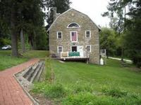
Appalachian Trail Museum
A museum dedicated to the history and joys of hiking the trail, and your best chance to see hikers throwing up ice creamLocated in the middle of the Appalachian Trail, this small museum celebrates the hundreds of thousands of hikers who have done the trail either in full or in part.
The museum, run largely by volunteers, has over 13,000 photos of hikers who have come through the area and have a reconstruction of a shelter built by Earl Shaffer, the first person to walk the entire trail in 1948, and a kind of hiker's patron saint.
The museum is across from the Pine Grove Furnace General Store where hikers often take part in the tradition of eating a half gallon of ice cream in a single sitting. Many then experience the less fun part of the tradition of throwing all that ice cream up up, as their bodies - starved of fat and sugar for weeks - attempt to process the massive dose.
Read more about Appalachian Trail Museum on Atlas Obscura...
Category: Museums and Collections, Unique Collections
Location: Pine Grove Chapel, Pennsylvania, US
Edited by: Dylan, atimian
Tsingy de Bemaraha National Park and Nature Reserve
Wed, 23 Nov 2011 06:00:00 -0600
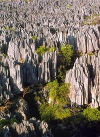
Tsingy de Bemaraha National Park and Nature Reserve
Fabulous formations, weird and wonderful wildlifeThe word tsingy is indigenous to the Malagasy language as a description of the badlands of Madagascar. The word can be translated into English as "where one cannot walk barefoot."
The tsingys are karstic plateaus where groundwater has undercut the elevated uplands, gouging caverns and fissures into the limestone. Because of local conditions, the erosion is patterned vertically as well as horizontally. In several regions on western Madagascar, centering on this National Park and adjacent Nature Reserve, the superposition of vertical and horizontal erosion patterns has created dramatic "forests" of limestone needles.
Surpassingly difficult to traverse, this landscape has created refuges within a refuge, where endemic species can be subdivided into pockets perhaps as small as a single limestone spike. Most expeditions to the area find a plant or animal previously undescribed by science. Wonders await around every corner - if your shoes haven't been chewed away by the harsh terrain.
Read more about Tsingy de Bemaraha National Park and Nature Reserve on Atlas Obscura...
Category: Natural Wonders, Geological Oddities, Fascinating Fauna
Location: Antsalova, Madagascar
Edited by: Deryn, atimian, Dylan
Kumbuk River Resort
Tue, 22 Nov 2011 12:00:00 -0600
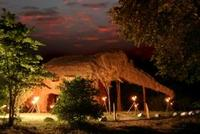
Kumbuk River Resort
Spend the night inside a two-story elephant villaAfter 26 years of civil war, the government of Sri Lanka finally defeated rebels and restored control over the island in 2009. Since that time, Sri Lanka has been one of the fastest-growing economies in the world and has worked to bring in more visitors through eco-tourism. One of the hottest new spots for eco-tourism in the nation is the Kumbuk River Resort.
Billed as an eco-preserve, the resort lets tourists rent out the entire 14-acre plot, and stay in the world's largest elephant. Not exactly a live elephant, but a 2-story thatched elephant-shaped villa. Resembling a jungle-dwelling trojan horse, the elephant villa even has modern amenities; living room, bathroom and plunge pool.
From the location, visitors can explore the surrounding landscape and see real elephants during the day and rest in the belly of the beast at night. To preserve the environment of the resort, no more than 12 guests may stay at the resort at one time.
Read more about Kumbuk River Resort on Atlas Obscura...
Category: Commercial Curiosities, Odd Accommodations, Architectural Oddities, Outsider Architecture
Location: Buttala, Sri Lanka
Edited by: serflac, atimian
Giant Ruhnama
Tue, 22 Nov 2011 07:00:00 -0600
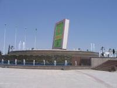
Giant Ruhnama
Monument to a bizarre book, written by Turkmenistan’s long-standing dictatorSaparmurat Niyazov is probably best known for his strange laws, banning everything from lip-syncing to smelly dogs in the capital city of Turkmenistan. Yet few people know that Niyazov is also a published author, and created a bizarre work known as the Ruhnama.
The Ruhnama is something of a manifestation of the personality cult of long-standing Turkmen president Niyazov. He wrote the Ruhnama (The Book of the Soul) in 2001 as a spiritual guide for the Turkmen nation, and as an attempt to "Turkmenize" the country. Ruhnama features a weird combination of revisionist history, moral ideals, religious norms and fairytales. The first volume was issued in 2001, and a second volume was published three years later.
Niyazov ordered that reading the book was mandatory at all schools and universities, and that all new government employees should be tested on the book’s contents. He later even made a test on the Ruhnama an essential element of driving tests. Niyazov was once quoted saying, that God himself told him that everyone who has read the book would come directly to heaven.
Often compared to Gaddafi’s infamous Green Book in Libya. Since its publishing, the Ruhnama has largely been met with amusement outside the country. Generally seen as an excellent example of the weird, totalist nature of Turkmenistan’s regime, the book shows the country’s bizarre closeness between the state and the head of state.
Even Niyazov’s death in 2006, has not put a damper on the popularity of the book in the regime, and Niyazov’s successor still regards the Ruhnama as an essential part of Turkmen heritage. Despite its strange nature, the book has been translated into several languages, mostly sponsored by foreign companies that received large-scale contracts in return.
The Giant Ruhnama is but one of the many weird outcomes of the personality cult of Niyazov, which has turned Ashgabat into one of the most politically bizarre places on Earth, adorned with golden statues of the dictator and freed of all "non-Turkmen“ elements, such as theaters. As of now, Niyazov is the only author self-conscious enough to have created a giant monument to his fictitious work.
Read more about Giant Ruhnama on Atlas Obscura...
Category: Unusual Monuments
Location: Ashgabat, Turkmenistan
Edited by: Tawsam, atimian
Badeschiff
Tue, 22 Nov 2011 05:00:00 -0600
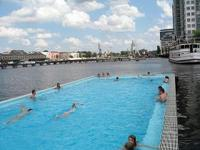
Badeschiff
Floating swimming pool within a moored vesselCity beaches are big business in Berlin, a city, which is glaringly missing a sea beach. Every summer, Berliners flock to lakes, numerous public swimming pools, as well as city beaches, strung like beads along the Spree river as it cuts right through the city center.
Unfortunately, the Spree river itself is too polluted and too frequently used by ships to ensure safe swimming. Luckily, there is still the chance to bathe at the river without touching its filthy waters. The Badeschiff (literally Bathing Ship), moored near the eastern city center, is a large swimming pool, which was built inside the hollowed hull of an anchored vessel.
The pool was designed by Susanne Lorenz as part of a competition for city arts projects, and was inaugurated in May 2004. Since then, the Badeschiff has become a favorite among Berliners and tourists alike trying to escape the mid-summer's heat.
During the summer months, an open air bar, sunbathing area, massages and sports classes are available at the pool's location as well. After the summer season, a cocoon-like temporary roof is being built over the pool and the surrounding area, which holds two saunas and a lounge bar. The location also hosts regular concerts and parties, making it a year-round center for activity in Berlin.
Read more about Badeschiff on Atlas Obscura...
Category: Watery Wonders, Commercial Curiosities, Architectural Oddities
Location: Berlin, Germany
Edited by: Tawsam, atimian
Tapsa Temple
Mon, 21 Nov 2011 10:00:00 -0600
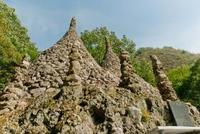
Tapsa Temple
120 mortarless pagodas built by one Korean hermitThe difference between having a singular artistic vision and obsessive insanity can be quite narrow. Straddling the line is Buddhist hermit Yi Gap Yong.
Yong created 120 stone pagodas below the Horse Ear Mountains in South Korea. And he did so without any tools, mortar or help from his friends.
Yong came to the area to meditate in 1885 when he was only 25 years old. When he first arrived, it was a tranquil landscape, but was not yet a temple, and he was not yet an ordained monk. Lack of formal training did little to slow down his work, and over the next 30 years he built the pagodas while living alone as a hermit.
Created out of circles of larger rocks, the pagodas eventually come to a point, giving them their conical peak. All made solely of local rocks from streams and rivers, some of the largest pagodas tower 30 feet above the rest of the temple complex.
Yong died in 1957 nearly 100 years old. Today, over 80 of the pagodas remain and have been preserved for tourists. A white statue near the temple depicts the creator of the complex, Yi Gap Yong, so he can watch over his impressive statues forever.
Read more about Tapsa Temple on Atlas Obscura...
Category: Architectural Oddities, Curious Places of Worship, Outsider Architecture
Location:
Edited by: serflac, atimian, Dylan
Obelisk of Axum
Mon, 21 Nov 2011 05:00:00 -0600
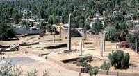
Obelisk of Axum
Massive stele returned to Ethiopia after 70 years in RomeConsidering the size of the Obelisk of Axum, it is truly amazing that it was transported between continents twice during the last 100 years. However, for many people in Ethiopia, the return of the massive stele was an important milestone in bolstering national pride and celebrating Ethiopia's history.
From the early 4th century B.C.E until the 10th century C.E, the Kingdom of Axum was one of the greatest powers on earth. Centered as a trade city between Persia and Rome, the city of Axum flourished in culture, power and wealth. A pagan Kingdom during its early peak, giant pillers were erected to mark the tombs of important leaders.
In the 4th century, the King Ezana of Axum solidified the Kingdom's conversion to Christianity, and stopped all pagan practices, including the erection of burial stelea such as the 80-foot Obelisk of Axum. Standing only until the 16th century, an earthquake likely toppled the obelisk, and without any importance in a Christian society it was left in multiple pieces to disintegrate back into sand.
The Obelisk lay in ruin for hundreds of years until it was re-discovered by Italian soldiers during the conquest of Ethiopia in 1935. Brought back in three pieces, the 160-ton stele was taken as loot to Rome, where it was reassembled. After world war II, the UN ruled that the stele must be returned to Ethiopia, but complications arose almost immediately.
After years of fighting and delays, the Obelisk was finally returned to Ethiopia in 2007. The pieces were re-assembled and the Obelisk was placed near two other famous stelea; the Great Stelea standing at 108 feet, and the King Ezana stele, erected to the King that outlawed their use when he brought Christianity to his kingdom.
Read more about Obelisk of Axum on Atlas Obscura...
Category: Architectural Oddities, Incredible Ruins
Location: Aksum Maryam Bete Kristiyan, Ethiopia
Edited by: serflac, atimian, Dylan
Roman Polanski's Neptune
Fri, 18 Nov 2011 21:00:00 -0600
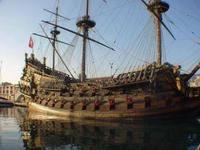
Roman Polanski's Neptune
Massive galleon from a box-office bomb docked in GenoaIn the early 1980s, Roman Polanski told Paramount Pictures that his new tale of treachery on the high seas, "Pirates," would cost $15 million. When it was finally released at Cannes in 1986, its budget had ballooned to $40 million, its budget buckling under exotic filming locations, special effects and a larger-than-life galleon called the Neptune.
At the time, the Neptune, was hailed as the most expensive movie "prop" of all time, and its dedication to detail shined through. Besides the steel hull of the ship and a diesel-powered motor, the galleon actually had fully functioning sails and rigging. Along with true-to-form galleon infrastructure, the ship was intricately carved and painted to perfectly resemble a Spanish galleon, complete with a giant Neptune figurehead. Oddly enough, the Neptune is actually larger than a historical galleon, and some of the budget could have possibly been spared by a closer adherence to reality.
But, Polanski was never concerned with reality or consequences and he built the Neptune in his image; larger-than-life. Today, the Neptune is still on the high seas, and the Tunisian-built rig is docked in the Port of Genoa, where its looming rigging towers over modern Italian boats.
Read more about Roman Polanski's Neptune on Atlas Obscura...
Category: Commercial Curiosities
Location: Aeroporto Cristoforo Colombo, Italy
Edited by: atimian
Kyaiktiyo Pagoda
Fri, 18 Nov 2011 14:00:00 -0600
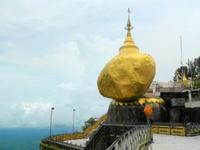
Kyaiktiyo Pagoda
Golden rock defies gravity, brings pilgrims from across MyanmarPerched dangerously on the edge of a cliff, pilgrims have been visiting the Kyaiktiyo Pagoda for centuries to meditate and give offerings to the Buddha. Whether this worship keeps the boulder from rolling down the precipice is unclear, but the gold-leaf covered stone still certainly inspires all who visit.
At 25 feet high and 50 feet around, the golden boulder in Mon State, Myanmar is hard to miss. According to legend, a Buddhist hermit was given a strand of hair from the Buddha himself, which he then gave to the king. For his gift, the king offered the hermit a boulder shaped like his head, and used magical powers to pull the boulder from the ocean. The king then built the small pagoda atop the rock to enshrine the Buddha's hair for all eternity and pilgrims have flocked to the site ever since.
Although the pagoda is small by comparison to other grand Buddhist places of worship, its location on the precarious boulder makes up for its miniature 24-foot spire. Seemingly barely resting on its base, the precariously placed golden rock draws thousands every year. Pilgrimage is at its peak during the Full Moon day of Tabaung in March, when 90,000 candles are lit at the site and the golden boulder shines in the night sky.
Read more about Kyaiktiyo Pagoda on Atlas Obscura...
Category: Natural Wonders, Curious Places of Worship
Location: Danu Reserved Forest, Myanmar
Edited by: serflac, atimian, Dylan
Minaret of Jam
Fri, 18 Nov 2011 06:00:00 -0600
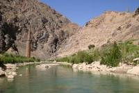
Minaret of Jam
200-foot-high minaret and only remnant of Afghanistan's lost city of the Turquoise MountainFor the last three decades, almost constant conflict has colored the world's perceptions of Afghanistan, and an inhospitable climate and frightening political instability have left Afghanistan on few traveler's itineraries. But before the war-torn reality of the country today, societies flourished, and left behind traces of their greatness. The minaret of Jam is one of these legacies.
Built in the late 12th century, the minaret was once connected to a great mosque along the riverbank, and evidence of the building and a massive courtyard have also been found near the site. Some scholars have suggested that the minaret is the only remaining structure from the lost city of the Turquoise Mountain, one of the greatest urban civilizations of its time, and a bastion of tolerance, where all religions were accepted. The rest of the lost city perished during Mongol invasions in the 1220s possibly leaving behind only the minaret.
Besides the semi-miracle of its survival, the minaret is an incredible work of architecture. Extending 213 feet into the air, the minaret is made completely of tan baked bricks and is intricately carved with Koranic inscriptions of multiple colors. In 2002, the minaret was nominated as a UNESCO World Heritage Site, one of only two in all of Afghanistan.
After staying intact for 1000 years, the minaret still faces threats from war, and the harsh climate of Afghanistan. The minaret of Jam is also currently listed as a site in danger, and many fear that another harsh winter, or earthquake could topple the only legacy of the city of Turquoise Mountain.
Read more about Minaret of Jam on Atlas Obscura...
Category: Incredible Ruins
Location: Rud-e Jam, Afghanistan
Edited by: serflac, atimian, Dylan
The Magic House
Thu, 17 Nov 2011 12:08:00 -0600
The Magic House
The Magic House provides a beautiful and creative environment for curious youngsters to get their knowledge on.You don't have to be a kid to appreciate all the wonder and knowledge that is packed inside the walls of St. Louis' Magic House. Once an abandoned Victorian mansion in the Kirkwood suburb, the Magic House now stands as the region's first interactive children's museum, which is complete with a news studio simulator and an electrically charged ball that causes visitors' hair to stand on end.
It takes more than one day to fully explore and enjoy the scholastic treasures found on every floor of the Magic House. Exhibitions such as the Bubble Room and the Lewis and Clark Adventure are designed to educate and entertain people of all ages. The pin point wall allows curious onlookers to create 3D impressions of themselves, and the Jack and the Beanstalk area gives kids the opportunity to climb a three-story beanstalk just like the hero from the classic children's tale.
Founded by Jody Newman and Barbie Freund, The Magic House is a not-for-profit organization that originally opened to the public on October 16, 1979 to provide students of all ages with hands-on learning. The house itself was originally built in 1901 and served as a private home for George Lane Edwards, who was the first president of the St. Louis Stock Exchange and one of the directors of the 1904 St. Louis World's Fair.
Read more about The Magic House on Atlas Obscura...
Category: Museums and Collections, Strange Science
Location: Lake Saint Louis, Missouri, US
Edited by: chelseadeptula, Dylan
Forest Hills Cemetery
Thu, 17 Nov 2011 06:00:00 -0600
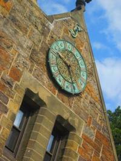
Forest Hills Cemetery
A beautiful Victorian cemetery complete with miniature villageIn Jamaica Plain at the end of the orange line of Boston's MBTA train system, the Forest Hills Cemetery lies on 275 acres of green space. Known as
Centered around a peaceful lake, the cemetery showcases both natural and man-made beauty. Many of the graves are adorned with beautiful sculpture, and the mausoleums that dot the hillsides display attractive architectural detail. Several contemporary sculptures add a sense of playfulness—look for the a family of dressed-up trees and miniature village.
The miniature village was added in 2006 as part of a larger exhibition in the cemetery. According to artist Christopher Frost
"Each concrete building is a replica of the home of a particular person buried at Forest Hills. I chose structures from the thousands of possible residences in order to include a variety of architectural styles. Just as the houses’ architecture reflected the diversity of their occupants’ background, social status, ethnicity, and other traits during their lifetimes, so the architecture of their monuments and grave sites reflects those traits after their deaths."
Worth extra weirdness points, is spotting the tiny concrete model home of Ralph Martin, a wagon-driver, who perished in Boston's most unusual disaster the Great Molasses Flood.
The Victorian cemetery is home to a number of prominent historic figures, including poets Anne Sexton and E.E. Cummings, and playwright Eugene O'Neill. It was added to the National Register of Historic Places in 2004.
Read more about Forest Hills Cemetery on Atlas Obscura...
Category: Catacombs, Crypts, & Cemeteries
Location: Boston, Massachusetts, US
Edited by: Facebook_1291655882, atimian, Dylan
San Romà de Sau
Wed, 16 Nov 2011 09:00:00 -0600
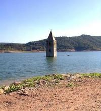
San Romà de Sau
Romanesque tower appears when water levels dropSometimes old ruins just get in the way of modern progress. When that happens, there is apparently no other choice than to flood a 1000-year-old city with breathtaking Romanesque ruins. Despite the deluge, after 50 years, the proud spire of the village's church won't go away so easily.
In the 1960s, the Catalonian government made the choice to create a reservoir on the site of San Romà de Sau, a village that had been inhabited for a millennium. Forced to leave their town, the people made their best effort to take their valuables, and even exhume their dead before the man-made flood. Leaving the skeleton of their town, they headed inland.
As predicted, the creation of the reservoir flooded San Romà de Sau and completely submerged the buildings. However, when water levels in the area drop, the ghost village eerily emerges from the water, highlighted by the three-story church of the town.
Although very small, the pointed spire of the church can still be seen from anywhere in the surrounding hills. When the reservoir is high, only the tip of the Romanesque spire can be seen, but during periods of drought, the entire church emerges on dry land. During one of the dry periods, an effort to fortify the remains took place, and the church was reinforced with concrete. Despite being reinforced, the church is off-limits to visitors, and has a fence surrounding it that sinks with the water level as well.
Along with the church, other ruins of the town including an empty cemetery and the foundations of other buildings come to the surface as well and are frequently visited by tourists.
Read more about San Romà de Sau on Atlas Obscura...
Category: Architectural Oddities, Incredible Ruins, Subterranean Sites
Location: Sant Roma de Sau, Spain
Edited by: serflac, atimian
Old Harry Rocks
Wed, 16 Nov 2011 07:00:00 -0600
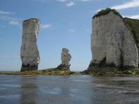
Old Harry Rocks
65 million-year-old chalk outcroppings mark the end of the Jurassic CoastStanding guard on the coast of England near Dorset, are the massive Old Harry Rocks. Formed over millions of years, the white outcroppings prominently mark the end of the Jurassic Coast, a fossil-rich line of cliffs that come to an abrupt halt near the pillars.
Also known as sea stacks, the rocks formed somewhere around 65 million years ago from the buildup of plankton and other microorganisms. Made completely of chalk, the white rocks were named some time during the 18th century, before erosion had caused some of the other stacks in the grouping to fall. According to legend, the stacks were named Old Harry as a euphemism for the devil, who allegedly used to nap on the rocks.
Another story tells of the pirate and smuggler Harry Paye who stashed his loot somewhere near the rocks. During the late 19th century, one of the most prominent outcroppings, considered Old Harry's "Wife," crumbled under years of decay and crashed into the sea. Eventually all of the stacks will fall, but new ones are constantly emerging as the sea forms them over millennia.
Read more about Old Harry Rocks on Atlas Obscura...
Category: Natural Wonders, Geological Oddities
Location: Isle of Purbeck, United Kingdom
Edited by: atimian
Lake Natron
Tue, 15 Nov 2011 13:00:00 -0600
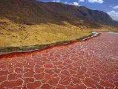
Lake Natron
A salty red hell on the border of Kenya and Tanzania breeds endangered flamingosDon't let the ring of salty marshes along the edge of Lake Natron fool you. This body of water is one of the most inhospitable areas on earth. Colored a deep red from salt-loving organisms and algae, the lake reaches hellish temperatures and is nearly as basic as ammonia. Although most humans settlements throughout history have formed around lakes and rivers, the barren landscape around Natron tells a clear story of a place no one ever wanted to live.
Africa's Great Rift Valley is known for some of its environmentally extreme regions such as the Erta Ale and Dallol. The saline environment of Lake Natron certainly qualifies. Water is supposed to give life, yet this salty world seems content to make life almost impossible... almost.
Although most species cannot handle the 120 degree lake water, cyanobacteria have made Natron their home and turned the lake its trademark reds and oranges. This algae growth has also fostered the developments of Lesser Flamingo nests. Amazingly, 2.5 million flamingos make Lake Natron their home and it is considered one of their only breeding grounds, making preservation of the lake an environmental concern.
In fact brining in fresh water would greatly upset the ecological balance of the lake and many in Tanzania have actively fought against bringing in water from the Ewaso Ng'iro River. If the salinity of the lake decreases, the cyanobacteria will also decrease and cause a loss of habitat for the endangered flamingos. Besides losing a bird habitat, the world would also lose a beautiful and salty natural wonder if too much water is diverted south to Natron.
Read more about Lake Natron on Atlas Obscura...
Category: Natural Wonders, Martian Landscapes, Wonders of Salt
Location: Peninji, Tanzania
Edited by: serflac, atimian, Dylan
Papakolea Beach
Tue, 15 Nov 2011 10:00:00 -0600
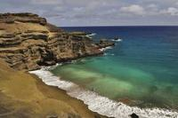
Papakolea Beach
Green sand and clear blue water on Hawaii's big islandThere must be something about hitting the southern most point of the United States that changes a few basic realities. About six miles from the South Point is Papakolea Beach. There's beautiful cliffs, clear blue-green Pacific Ocean, and green sand. Unbelievable coarse, speckled green sand.
In the entire United States, it is the only beach with green sand. Despite its frustrating location, accessible only by miles-long hike or four wheeler, it is a site on Hawaii's big island that is worth the hassle. Situated beneath Mauna Loa, the world's largest volcano, a strange mix of chemistry and geology has combined to form this bizarre and strangely beautiful sandy environment.
Over thousands of years, Mauna Loa's eruptions formed a massive cinder cone that circled around to create a small bay. Like many of Hawaii's volcanoes, the eruptions brought tons of minerals to the surface, including an abundance of olivine. It brought so much olivine to the surface, that much of the cinder cone is made from the silicate mineral.
As the cinder cone eroded, most of the other ash and glass from the eruptions were washed out to sea. But the denser chunks of olivine survived the tides, and caused the beach to turn a rare green color.
Since the last eruption was 10,000 years ago, a short time in geological terms but a long time in an active volcanic region, the beach is actually living on borrowed time. Not because of another coming eruption that will destroy the beach, but in fact because of a lack thereof. The supply of olivine is slowly running out. Although it washes away slower than other minerals, it will eventually all erode, turning Papakolea back into a normal beach.
For professional tanners and those who appreciate geological novelty, the time to plan a trip to South Point is fast approaching, and you may only have a few more millennia to see the distinctive beach.
Read more about Papakolea Beach on Atlas Obscura...
Category: Natural Wonders, Geological Oddities, Intriguing Environs
Location:
Edited by: serflac, atimian
Cadet Chapel
Tue, 15 Nov 2011 08:00:00 -0600
Cadet Chapel
Air Force Academy Chapel made of 100 identical tetrahedrons works to inspire those of all religionsStretching 150 feet into the chilly air outside of Colorado Springs, the Cadet Chapel appears like a massive triangular accordion penetrating the tranquil landscape and leaving thousands of visitors in awe.
Designed in 1959 by MIT grad Walter A. Netsch Jr., the building is an iconic fusing of technology, worship and aesthetically pleasing futuristic architecture. It was finished in 1963 after four years of work and a budget of $3.5 million. From the outside, the conspicuous 17 spires dominate the landscape, but the technological know-how of the interior is truly inspiring.
The frame of the entire chapel is constructed out of 100 identical tetrahedrons, weighing five tons a piece. Each of the tetrahedrons is colored according to pattern, some with clear aluminum and others with vibrant colored glass. The careful planning and design of the interior structure gives the place of worship a spectacular palette of deep blues and pastels when light shines against the roof.
Built to inspire all who worship in its halls, the Chapel has a multi-religious approach, with a Protestant chapel on the top floor, a Catholic chapel on the middle floor, a Muslim prayer room, and a circular Jewish chapel on the lower floor. Although Christian worship dominates the chapel, the Jewish chapel features a famous "Holocaust Scroll" that was donated to the church after being found in an abandoned warehouse in Poland.
Although the chapel was controversial when it was first built, it has come be accepted and loved. It is open for visits and worship every day. For visitors hoping to just catch a glimpse while passing through, the huge Chapel is visible from Interstate 25 a few miles away.
Read more about Cadet Chapel on Atlas Obscura...
Category: Architectural Oddities, Curious Places of Worship, Outsider Architecture
Location:
Edited by: serflac, atimian, Dylan
Villa Aux Cent Regards
Mon, 14 Nov 2011 18:00:00 -0600
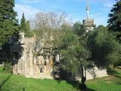
Villa Aux Cent Regards
100-windowed castle turned art gallery, built by one dedicated masonIn 1922, as Mussolini and his fascist regime were rocketing to power, Victor Grazzi and his wife Ida made their escape to the seaside French town of Montpellier. After working there as a mason for 30 years, Grazzi and his wife began to build a home on a small plot of land in 1950. Fueled by tragedy, what began as a home quickly became the impressive self-contained world of the Villa of 100 Views.
Ida Grazzi suddenly died in 1954, sending her husband's life into a tailspin. After 35 years of marriage, Victor was alone in Montpellier. But instead of falling into despair, Victor turned his tragedy into motivation to continue building the Villa he and his wife had started only five years earlier.
Created in pieces, the Villa became a spectacular hodgepodge of miniature towers and turrets, gates and windowed rooms. Employing reinforced concrete, Victor created a wondrous castle with smooth lines, rounded peaks and even sculptures of people and animals. Continuing his work for the next 15 years, the castle became known as the Villa Aux Cent Regards or "Villa of 100 Views," because of the 100 windows worked into the creation.
Entirely created out of concrete and recycled materials, the Villa also sports a lighthouse and a few other nautical themed additions. The castle also has its own vines on the property and a wine press that Victor used to make his own wine while he was still living in the place during the 1960s.
Sadly, Victor died in 1970, leaving 20 years of masonry to rot in Montpellier. For years, no one maintained the structure and it was mostly visited illegally by lovers and rambunctious youths. Finally fenced off in 1982 to prevent damage, the Villa continued to sit unoccupied until recently when work began to convert it into an art gallery and cultural space. Today it is maintained by a local gallery operator and hosts meetings and art shows.
Read more about Villa Aux Cent Regards on Atlas Obscura...
Category: Outsider Art, Miniatures, Small Worlds and Model Towns, Outsider Architecture
Location:
Edited by: serflac, atimian, Dylan
The Body Farm
Mon, 14 Nov 2011 17:00:00 -0600
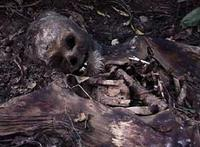
The Body Farm
Bring out your deadCalling William K. Bass's center for forensic observation a "farm" is, in a lot of ways a bit of a misnomer. Rather than growing any particular product, this farm is focused on how organic materials break down and decompose. Specifically, human cadavers.
Behind the University of Tennessee, a little outside of Knoxville, there's a 2.5 acre plot of land surrounded by a razor wire fence. This is the body farm, where forensic scientists and researchers learn about human decomposition. When William K. Bass first opened his center to study human remains in 1981, he had one dead body and a 16 square foot cage. By 2007, the farm had over 150 decaying specimen - many donated to the farm by interested volunteers. The bodies are placed in a range of scenarios to simulate various crime scenes. Clothed dead bodies, naked dead bodies, dead bodies underwater, dead bodies in cars, the list goes on. Bass's work on the Body Farm has revolutionized the field of forensic anthropology.
In addition to the extensive, ever-growing research, the Farm also possesses one of the largest collections of modern skeletal remains in the world, with over 700 in total and an additional 1000 future bodies willed to the project.
Read more about The Body Farm on Atlas Obscura...
Category: Strange Science
Location: North Knoxville, Tennessee, US
Edited by: EmilyYaMei, atimian, Dylan
Tió de Nadal
Fri, 11 Nov 2011 12:00:00 -0600
Tió de Nadal
Catalonia Tradition: Beating the hollow Christmas log until it defecates in your fireplaceSure, putting a Christmas tree in your house seems pretty arbitrary considering the true religious context of the holiday. But beating a smiling, hollowed-out Christmas log until it “defecates” in your fireplace takes the celebration in Catalonia to a whole new level.
In Catalan, Tió de Nadal is roughly translated to Christmas Log and is a widespread tradition in many parts of Spain. According to Catalan mythology, the Christmas Log brings small presents on Christmas (big presents come from the Three Wise Men) in the same way presents are placed under Christmas trees in United States. Originally, the Tió de Nadal was just a piece of dead wood, but now the log is often given a face with an attached nose and two little legs, along with a little red hat similar to a barretina.
If it stopped right there, it wouldn’t be that strange. Just another present-delivering vehicle adopted by a different culture. But it doesn’t stop there, that’s only the beginning. It all starts on the Day of the Immaculate Conception, December 8. Tradition states that households begin to “feed” the log every night starting then. The log is also usually given a small blanket during this time to keep it warm during the chilly weeks before Christmas.
After weeks of feeding, it is finally Christmas Eve and the log is placed in the fireplace, little face and beret staring up from the ground. Members of the house then take turns bashing the little log person with a stick and commanding it to defecate out presents, candies and wafers and not to defecate stinky herring. This is where the tradition got its other name, Caga tió, or shit log.
The bashing continues while traditional songs about the log are sung. Christmas is then celebrated to the delight of everyone in the house as they reach below the tió’s blanket to pull out their “gifts” of defecated candy and presents.
Read more about Tió de Nadal on Atlas Obscura...
Category: Cultures and Civilizations , Rites and Rituals
Location:
Edited by: serflac, atimian
Twyfelfontein
Fri, 11 Nov 2011 10:00:00 -0600

Twyfelfontein
Ancient artists in the middle of nowhere People have inhabited Twyfelfontein for the last 6000 years, and inscribed their otherwise lost history across the walls of caves, cliffs and hundreds of sandstone rocks.
Twyfelfontein, in Afrikaans, means uncertain spring, and the word perfectly sums up the area's vicious climate. Hot and arid, the region receives only 6 inches of rain per year, making it as close to being desert without an official classification. Still, for the last 6000 years, stone-age hunter-gatherers and later Khoikhoi herders have occupied the area and left their mark.
First reported in 1921, the carvings have since drawn the attention of the world community in their alien depictions of rituals, and life in the far reaches before the common era. Glazed over with years of brown-orange desert varnish, many of the engravings depict animals, early humans and bizarre fantasy creatures. Along with the classic engravings, there is also some evidence of everyday life in the carvings, as small indentations in the rocks indicate the playing of games and use of stones for tools.
Connecting the site to the modern age, the carvings show human life from millennia ago. Despite their initial strangeness, the carvings linearly display changes in human appearance, behavior and thought over our dynamic history and remind us that in the grand scheme of earth's lifespan, 6000 years isn't that long.
Read more about Twyfelfontein on Atlas Obscura...
Category: Incredible Ruins
Location: Twyfelfontein, Namibia
Edited by: jhamburger, atimian
Key Underwood Coon Dog Cemetery
Fri, 11 Nov 2011 08:00:00 -0600
Key Underwood Coon Dog Cemetery
A cemetery for only coon hounds in northeast AlabamaThe Coon Dog Cemetery in Cherokee, Alabama, approximately 25 miles northeast of Red Bay began in 1937 by Key Underwood when he sadly buried his faithful coon dog, Troop. They had hunted together for more than fifteen years and were close friends.
The burial spot was a popular hunting camp where coon hunters from miles around gathered to plot their hunting strategies, tell tall tales, chew tobacco and compare coonhounds. Those comparisons usually began and ended with Troop . . . he was the best around. On a dreary Labor Day in 1937, Underwood said good bye to his legendary coonhound. He wrapped Troop in a cotton pick sack, buried him three feet down and marked the grave with a rock from a nearby old chimney. On the rock, with a hammer and a screwdriver he had chiseled out Troop’s name and the date; a special marker was erected in his memory. Underwood said “When I buried Troop, I had no intention of establishing a coon dog cemetery. I merely wanted to do something special for a special coon dog.”
Out of one hunter’s devotion to his faithful coon hound, the “Key Underwood Coon Dog Memorial Graveyard,” was born. The site has become a popular tourist attraction and is the only cemetery of its kind in the world. Other hunters started doing the same when their favorite coon dogs died soon after. Today more than 200 coon dogs from all across the United States are buried at this spot in northwestern Alabama.
Three requirements must be met to qualify for burial in this unique cemetery.
- The owner must claim the dog is an authentic coonhound.
- A witness must declare the deceased is a coon dog.
- A member of the local coon hunter’s organization must be allowed to view the coonhound and declare it as such.
The major event at this cemetery is its annual Labor Day celebration to honor this special group of deceased 4-legged friends. The honorees list include names such as Patches, Preacher, Flop, Bean Blossom Boomer, Night Ranger and Famous Amos; all “certified” coon dogs. The celebration is hosted by the Tennessee Valley Coon Hunter’s Association and entertainment includes music, dancing, food and a “liar’s contest.”
Read more about Key Underwood Coon Dog Cemetery on Atlas Obscura...
Category: Memento Mori, Catacombs, Crypts, & Cemeteries
Location: Cherokee, Alabama, US
Edited by: spinkk, atimian
Mutonia Sculpture Park
Thu, 10 Nov 2011 08:00:00 -0600
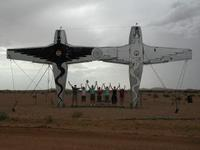
Mutonia Sculpture Park
Lonely industrial sculptures in South Australia created by a mechanic turned artistFor miles in every direction in the midst of the South Australian desert, there is only sand, rocks and desolate road. Yet in this flat, arid landscape is an oasis, made not of water and palms, but of unique and strangely industrial sculptures.
Emerging like a mirage, and just as unbelievable, is a gigantic metal dingo, affectionately known as "the big dog." Standing on skinny rusting legs, the dingo immediately draws in the eye with its thin tail and smiling open mouth made out of an old Chrysler. In the middle of the desert, the "big dog," is a friendly face in a brutally hostile climate where average high temperatures soar above 100 degrees fahrenheit.
Along with the dog, the site also features two upright plane-like sculptures, smaller robot figures and a few other sculptures made of recycled metals. Designed by Robin Cooke, this outsider art made out of useless waste products has wowed travelers on the desert roads since 1997. Before Cooke was creating his lonely sculpture park, he was a mechanic for over 20 years. Visitors on the sad and dusty road through the desert should remember to thank him for his career change.
Read more about Mutonia Sculpture Park on Atlas Obscura...
Category: Outsider Art
Location: Marree, Australia
Edited by: serflac, atimian
Las Lajas Sanctuary
Thu, 10 Nov 2011 06:00:00 -0600
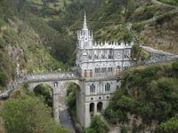
Las Lajas Sanctuary
Dangling church built over a Colombian gorgeMany places of worship are built around relics and icons. However, most of them are not built in such precarious and dangerous locations as Las Lajas Sanctuary, which crosses a forested gorge on the border between Colombia and Ecuador.
In 1754, an Amerindian woman and her daughter found themselves caught in a brutal storm. Hiding out from the weather in the gorge, the women felt a force calling to them, and to their amazement looked up and saw the image of the Virgin Mary on the rocks above. At that moment, the woman's daughter was simultaneously cured of her inability to hear and speak.
Shortly after the discovery was reported, a blind man wandered for ten years from village to village collecting donations to build a chapel around the image. When he returned to Las Lajas, he was able to see again. Both of those 18th century miracles inspired the creation of Las Lajas Sanctuary between 1916-1949, built around the original chapel. To co-opt the original miracle, the stone image on the cliff forms the back wall of the modern sanctuary, making a gorge-spanning bridge and church combination necessary.
Although the site was dedicated a minor basilica by the Catholic Church in 1954, non-religious visitors can still enjoy the dramatic setting and neo-Gothic architecture. The massive church sits 150 feet high over the river below, and its turrets contrast elegantly with the green cliffs and cascading waterfall, which are visible from the arched stone bridge.
Read more about Las Lajas Sanctuary on Atlas Obscura...
Category: Curious Places of Worship
Location: Bolivar, Colombia
Edited by: serflac, atimian, ofgarcia
Yangshuo and Moon Hill
Wed, 09 Nov 2011 09:00:00 -0600
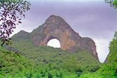
Yangshuo and Moon Hill
Natural arch gives panoramic views of Yangshuo's karst hillsUnlike most mountains, the karst hills of Yangshuo poke up randomly as the Li River meanders around their bases. Covered in lush, green vegetation, the natural formations create a dramatic landscape best viewed from Yangshuo's natural arch, known as Moon Hill.
Having drawn visitors with its unique formation for many years, Moon Hill was first climbed by Todd Skinner in the 1990s. Skinner was famous for his free climbing ability, and helped popularize the area with backpackers and hikers visiting China. Although there are climbing routes on Moon Hill, most visitors take the easier path to the summit, or the trail that goes through the arch.
Besides Moon Hill, Yangshuo is popular with visitors looking to take cave tours or bike through the magnificent landscape created almost entirely out of karst formations.
Read more about Yangshuo and Moon Hill on Atlas Obscura...
Category: Natural Wonders, Geological Oddities
Location:
Edited by: serflac, atimian
Hotel Quinta Real
Wed, 23 Nov 2011 09:00:00 -0600
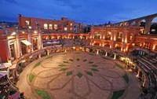
Hotel Quinta Real
Hotel designed around a 16th century Mexican bullringOn your next trip to Zacatecas, plan your wardrobe carefully. If you're planning to stay at the Hotel Quinta Real, it would probably be advisable to avoid wearing red clothes. Although there aren't bulls there anymore, the Hotel captures the spirit of a Mexican bullring so well, you just may have to worry about overzealous guests charging out of their rooms at the sight of your Cincinnati jersey.
Although there hasn't been a fight in the Hotel Quinta Real since 1975, visitors can get a great sense of what its like to be both spectator and bull. Built around an actual bullring in 1989, the hotel converted spectator's seats into luxury hotel rooms, featuring the original bullring as a plaza in the center. Besides the novelty of staying in the grandstand of an arena, the detail that was preserved in the ring is awe-inspiring.
While the spectators may have been swapped for colonial luxury and the bulls for roaming guests, the Hotel Quinta Real is a good first step into taking in the rich history of old Zacatecas.
Read more about Hotel Quinta Real on Atlas Obscura...
Category: Commercial Curiosities, Odd Accommodations
Location: Estacion Rio Grande, Mexico
Edited by: serflac, atimian
Ambohimanga Main Gate
Wed, 23 Nov 2011 05:00:00 -0600
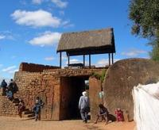
Ambohimanga Main Gate
Giant disc-shaped gate took 20 men to close off this city in MadagascarIn the 18th century, Ambohimanga was a town that needed to protect its royal family. Shielded naturally by forests, the town also erected a massive wall, and seven outer gates to protect its people. The main entrance of these seven gates guarding the town from attackers was known as Ambatomitsangana, the standing stone, and it proudly still waits in position to be used for protection.
The standing stone is exactly as it sounds, a massive stone disc weighing 12 tons. As with many walled cities of the Merina Kingdom in Madagascar at the time, the gates were created out of circular discs that were pushed into position by hordes of men every night. The stone disc guarding Ambohimanga took 20 men, and was over 130 feet in circumference. Each night, these guards would roll the stone into position, blocking off the main entrance to the town.
Today, the entire Ambohimanga area is a UNESCO World Heritage Site, and is home to royal burial grounds, the queen's pavilions and the gigantic standing stone.
Read more about Ambohimanga Main Gate on Atlas Obscura...
Category: Architectural Oddities, Incredible Ruins
Location: Ambohimanga, Madagascar
Edited by: atimian, Dylan
Independence Monument of Turkmenistan
Tue, 22 Nov 2011 10:00:00 -0600
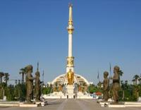
Independence Monument of Turkmenistan
Sumptous memorial to a controversial independenceThe Independence Monument of Turkmenistan is one of the largest and most extravagant of its kind in the entire world. Covering an area of more than 80,000 m², the monument sits in the middle of a landscaped park, with numerous water fountains and pools. Considering its extravagance, many visitors forget that it is situated in a city and surrounding region prone to water shortage.
27 comically looking statues of Turkmen heroes surround the centrepiece of the monument and the golden statue of Turkmenistan’s long-running dictator Niyazov, stands proudly in front of what appears to be a dome, with a minaret-like tower rising from its top. The tower is also adorned in gold and features a viewing platform at its top, as well as the oddly-named Museum of Turkmen Values (which is not much else, but a meagre and extremely overpriced ethnographical collection) within the dome below.
But what exactly is so excessively celebrated with the monument remains unclear. It depicts the country’s independence as a huge effort, after a hard struggle to finally break free. However many feel that in reality, Turkmenistan was not at all that eager to gain independence when the Soviet Union collapsed.
Niyazov (who was already in charge prior to the collapse of the USSR) at first strongly opposed a dissolution of the USSR, and promoted a reformed Soviet Union rather than a large number of independent states. Just when it was obvious that the Soviet Union had come to an end, Niyazov turned 180 degrees, and in an attempt to keep control over politics in Turkmenistan, before being washed away by a revolution, hastily declared the independence of the country. Independence was proclaimed only two months before the final curtain fell for the Soviet Union.
The oversized monument seems to proudly memorize a hard-fought independence with Niyazov at the center of the monument and seemingly the Turkmen independence movement, when in fact, he had tried to prevent the country’s independence until he had no other choice.
Read more about Independence Monument of Turkmenistan on Atlas Obscura...
Category: Museums and Collections, Unusual Monuments
Location: Ashgabat, Turkmenistan
Edited by: Tawsam, atimian
Nokhur Cemetery
Tue, 22 Nov 2011 06:00:00 -0600
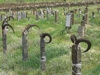
Nokhur Cemetery
Cemetery with goat-horn bedecked gravestonesAt the cemetery of the isolated village of Nokhur, nearly every grave is marked by a wooden post adorned with the horns of a mountain goat. They are thought to fight off evil spirits, and help the soul of the deceased to ensure a safe passage to heaven. Aside from their appearances at the village cemetery, skulls of mountain goats are found at some of the houses’ doorways of the village as well.
The Nokhuris, the mountain tribe of the region, have always considered mountain goats sacred animals, admiring their strength and endurance. The reverence of mountain goats clearly predate Islamic traditions, and although today the Nokhuris are devout Muslims, parts of the ancient belief system has continued to survive.
The cemetery of Nokhur is an excellent example of how Islam works in Central Asia. Other than in the Middle East where the arrival of Islam virtually erased all traces of pre-Islamic religions, in Central Asia certain parts of pre-Islamic belief systems have simply been incorporated into the newly arrived religion, creating a syncretism often symbolized in the burial rites of local tribes.
Read more about Nokhur Cemetery on Atlas Obscura...
Category: Memento Mori, Catacombs, Crypts, & Cemeteries, Rites and Rituals
Location: Nokhur, Turkmenistan
Edited by: Tawsam, atimian
Kingdom of Redonda
Mon, 21 Nov 2011 12:00:00 -0600
Kingdom of Redonda
A hotly contested micro-nation off the coast of Montserrat It would be ideal to have hard evidence about the history of Redonda. But unfortunately, reality and legend have blurred over the last 150 years, and now the world is left to deal with an island micro-nation, playing host to conflicting claims to a throne that may or may not be legitimate.
According to his progeny, the Kingdom of Redonda was founded by Matthew Dowdy Shiell and was done so in a legal manner. In 1865, Shiell, who had noticed a seemingly unclaimed and unpopulated island in the Caribbean near Montserrat, put forth a petition to Queen Victoria to become king of the Island. The Queen consented, and a line of kings was created.
Shiell's son, a science fiction writer, took his kingship and ran with it, spreading the word about Redonda in pamphlets that many took as complete fiction. Shiell's son may have done irreparable damage to the legitimacy of the island by simply being involved, but nonetheless, Redonda's notoriety spread. When Shiell's son died, he left the island and title of king to a man named John Gawsworth, who changed the history of the island forever.
Often penniless, Gawsworth was known to sell the title of king multiple times. While this did well to fatten his pocketbook, Gawsworth also appointed multiple monarchs, settting up for huge Redonda drama in the 20th century. In 2007, the last man to claim the title of King of Redonda renounced his claim to the BBC. However, Redonda was not yet out of the news.
Later in 2007, a pub in England claimed to be an embassy of Redonda to gain diplomatic immunity from a smoking ban. The last sources on the conflict state that the pub's owner was in fact given knighthood by the latest king of Redonda.
Read more about Kingdom of Redonda on Atlas Obscura...
Category: Micro-Nations
Location: South Point, Antigua and Barbuda
Edited by: serflac, atimian, Dylan
Alexander Golod's Pyramids
Mon, 21 Nov 2011 07:00:00 -0600
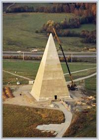
Alexander Golod's Pyramids
Ukrainian defense contractor's center for studying "pyramid energy"In the 1930s an occultist, writer and hardware store owner published a theory that pyramids might have special powers, such as preserving food, sharpening blades and focusing the mind. The theory was picked up by Karel Drbal, a Czech businessman who created a pyramid shaped box for sharpening knives.
The idea of pyramid power might have ended here, if paranormal authors Sheila Ostrander and Lynn Schroeder had not met with Drbal while traveling and written an entire chapter about the theory of pyramid power in their new-age hit "Psychic Discoveries Behind the Iron Curtain." Pyramid power was now an established part of new-age belief.
Picking up the torch was Ukrainian defense contractor Alexander Golod. Golod's research on pyramids is bizarre, innovative, and entirely unscientific. Nonetheless he is committed to his work and Golod created a 150-foot-high fiberglass pyramid in Russia to begin his strange experiments. Although he created multiple pyramids, his most notable is an hour outside of Moscow and stands at 150-feet high.
After a number of longitudinal studies, Golod's research found that the pyramid presence had some serious effects, including increasing the immune system, increasing agricultural yield 30-100%, and decreasing the effects of pathogens and radioactive material. Other organizations such as the International Partnership for Pyramid Research and Pyramid of Life are major proponents of pyramid therapy.
Despite a website claiming scientific support from the Russian Academy of Medical Sciences there is no published scientific evidence to support any of these claims.
Read more about Alexander Golod's Pyramids on Atlas Obscura...
Category: Strange Science, Unusual Monuments, Hoaxes and Pseudoscience, Outsider Architecture
Location: Tvertsa, Russia
Edited by: serflac, atimian, Dylan
Basbous Brothers Outdoor Gallery
Mon, 21 Nov 2011 04:00:00 -0600
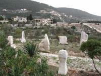
Basbous Brothers Outdoor Gallery
An open-air gallery and garden in North Lebanon with plans to continue growingIn 1994, the city of Rachana was transformed into an international name in the art world. Breaking the molds of classical Middle Eastern artwork, the Basbous Brothers and their children have hosted an international sculpture event for the last 18 years that have left a global mark on the small Lebanese town.
Michel, Youssef, and Alfred Basbous were all born in Rachana, Lebanon, and never had plans to leave. Each brother was an enormously talented sculptor, and rather than try and break into the art world, they brought acclaim to the 1,000-person town that they never wanted to leave.
The eldest brother Michel was the first to receive praise for his work, and began the tradition of creating open-air sculptures in Rachana. Using marble, stone and even wood, Michel created his art with his town in the background. His brothers continued to add to his works, but the town truly changed after Michel died, and his brothers invited sculptors from across the world for an international exhibition in 1994.
Instead of simply debuting works at the exhibition, artists came and were asked to make a contribution to the ever-growing outdoor museum in Rachana. Since that time, the outdoor gallery of the Basbous brothers has grown with the annual sculpture festival in Rachana.
Read more about Basbous Brothers Outdoor Gallery on Atlas Obscura...
Category: Outsider Art
Location: Rachana, Lebanon
Edited by: serflac, atimian
Rubjerg Knude Lighthouse
Fri, 18 Nov 2011 16:00:00 -0600
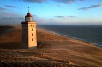
Rubjerg Knude Lighthouse
Abandoned lighthouse awaits its destiny of under shifting sandDesertification is not a problem that is usually associated with Denmark. Yet 60 meters above the sea, the Rubjerg Knude Lighthouse is slowly being claimed by shifting sands that have caused the lighthouse to be abandoned for 10 years, and will eventually cause its complete destruction.
Wind from the North Sea blasts up the cliffs toward the lighthouse, and has steadily caused sands to shift and bury the structure. Since its creation, the coast has eroded at a rate of 5 feet per year, rapidly changing the landscape around the lighthouse.
The lighthouse stopped functioning in 1968, and stayed alive for a few more decades as a museum and coffee shop. But slowly, the force of sand overtook the lighthouse, causing its abandonment in 2002. Efforts in the 1990s were taken to plant grass and other foliage to stop the spread of the sand, yet anything that was done, was overpowered with ease by the sweeping sands and erosion.
When the lighthouse was first built in 1900, a few other small buildings were still nearby. The Mårup Church near the lighthouse, a residence built next to the structure and small gardens have all since been dismantled, or destroyed by shifting sands. The lighthouse is the last building to remain standing against the sand, but not for long.
Read more about Rubjerg Knude Lighthouse on Atlas Obscura...
Category: Natural Wonders, Outsider Architecture
Location: Klostergroft, Denmark
Edited by: serflac, atimian, Dylan
Museum of the German
Fri, 18 Nov 2011 11:00:00 -0600
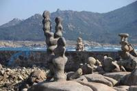
Museum of the German
Open air sculptures by an eccentric and loin-clothed hermitWhen Manfred Gnädinger came to Camelle, Spain, he was clean-shaven and even attended Mass every Sunday. But some time during the early 1960s, everything changed, beginning with his wardrobe and appearance.
The changes began when Gnädinger rented a small plot of land facing the Atlantic Ocean, and began constructing a small 7 by 10-foot cabin. Adding to his spread, he also planted a small garden and began a strict vegetarian diet. As his home progressed, so did his evolution, and by the mid-1960s, he was heavily bearded with long hair, and wore only a loin-cloth in any kind of weather.
He soon became well known in the community and adopted the name "Man," a shortened version of the name bestowed upon him at his arrival, the Man from Germany. Working to become one with nature, Man swam every day in the ocean and began creating strange sculptures on the beach near his home. Some echoed the work of famous Spanish architects like Gaudi. Others were much more abstract and were made out of driftwood, stone and even animal remains.
His work steadily progressed, and people started to go out of their way to see the strange man and his unusual beach sculptures, having to pay Man only 1€ to view his work. Sadly, in 2002, an oil tanker called the Prestige spilled its contents and came ashore near Man's house. Almost overnight, Man found his entire livelihood destroyed. He died only a month later, and many believe his sadness killed him.
In 2010, many of his beach sculptures were destroyed, but there are still some traces of Man and his outdoor museum in Camelle.
Read more about Museum of the German on Atlas Obscura...
Category: Outsider Art
Location: Camelle, Spain
Edited by: serflac, atimian, Dylan
Anta de Pavia
Thu, 17 Nov 2011 18:00:00 -0600
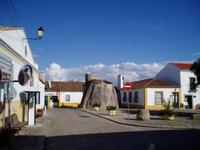
Anta de Pavia
Pagan monument converted to Christianity with the populationEven without its history, the Anta de Pavia would stand out. In the dead center of a square in Pavia, surrounded by white-washed, red-roofed buildings, is a giant boulder that has stood there for centuries.
Originally a dolmen, the 4 meter high stone was used as a burial chamber before paganism fell out of favor. When Christianity supplanted most other beliefs, the massive rock was re-designated a small chapel dedicated to São Dinis in the 17th century. The inner chamber of the dolmen was turned into the nave of the chapel, and although it remains sparse, the interior features a small blue-tiled altar.
While the chapel is an interesting landmark, it is even more so as it tells a common story of the conversion of medieval Portugal, and many similarly converted pagan structures exist across the country. However not all Portuguese have given up the old ways and while praying to Christ, many are known to slip in a prayer to the old gods.
Read more about Anta de Pavia on Atlas Obscura...
Category: Architectural Oddities, Curious Places of Worship, Incredible Ruins
Location: Pavia, Portugal
Edited by: serflac, atimian, Dylan
Istana Nurul Iman
Thu, 17 Nov 2011 12:00:00 -0600
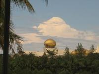
Istana Nurul Iman
1800 rooms of single-family residence in Brunei Named the Palace of the Faith Light, this $1.4 billion home in Brunei seems to display more opulence than spirituality. Completed in 1984, the extravagant Istana Nurul Iman is the largest palace in the world, and is occupied by only one family.
Dripping in oil wealth, the palace was commissioned by the Sultan of Brunei Hassanal Bolkiah, and every detail of the place is grandiose and over-the-top. Covering 2,000,000 square feet, the palace features everything one would expect; 1,800 rooms, a 110 car garage, and of course, an air-conditioned stable for the Sultan's horses. So as not to get too far from the idea of Faith Light, the palace also includes its own mosque that can accommodate 1,500 worshippers.
Besides being the sultan's home, he also entertains foreign dignitaries at the palace, and several government offices are also on site. Despite these practical uses, the palace is still very much a home for the sultan and houses part of his 5,000 car collection including custom made Bentleys and hundreds of Ferraris and Rolls Royces.
Although it is a private residence, the sultan invites the masses in for three days a year during Hari Raya Aidilfitri. An estimated 110,000 come every year to gawk at the riches of the sultan, and receive a gift from his eminence; small packets containing money.
Read more about Istana Nurul Iman on Atlas Obscura...
Category: Architectural Oddities, Curious Places of Worship, Eccentric Homes
Location: Sungai Tumasek, Brunei
Edited by: JBHewlett, atimian, Dylan
Crocodile House
Wed, 16 Nov 2011 10:00:00 -0600
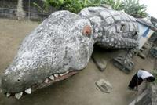
Crocodile House
Living inside a fearsome reptile in the Ivory CoastThierry Atta is now fully moved into his new home. Situated in the midst of Abidjan, the former capital of the Ivory Coast, the architect's home is actually a massive and grotesquely-smiling crocodile, completely hollowed out to create a living space inside of the reptile structure.
Completed in 2008, the crocodile was actually the work of artist Moussa Kalo, who sadly died only two months before it was completed. As an apprentice of Kalo, Atta moved into the work the men had created, and has since made the crocodile his home. Including windows and a bed, the strange concrete house is completely livable, and is a joy to many people in the neighborhood who stop by the courtyard to smile and play by the eccentric home.
Read more about Crocodile House on Atlas Obscura...
Category: Eccentric Homes, Outsider Architecture
Location: Adjame, Ivory Coast
Edited by: serflac, atimian
Grotto of Saint Genevieve
Wed, 16 Nov 2011 08:00:00 -0600
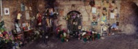
Grotto of Saint Genevieve
18th century underground pilgrimage site, dedicated to a Saint that did something...Saint Genevieve was definitely a Saint who lived in the 5th century. That's about the extent of the information most people can agree on. No one has a definitive answer as to why she was canonized, or why a chapel was built around a grotto in her honor.
Born in 423, Saint Genevieve was a poor shepherd girl, and became a devout ascetic when she was 16 years old. Having some type of connection to the divine, Saint Genevieve was involved in some type of miracle, but that's where the stories diverge. According to some, Genevieve warned of the coming Hun invasion and gave Parisians the strength they needed to hold their city. Others say she recommended fleeing the city during a cholera outbreak.
Of the other stories, the most popular seems to make more sense in relation to her grotto. In 448, when she was still a young woman, a bishop came to her dying of thirst. A spring came forward from her field and quenched his desires. A chapel was later built around this spring, and it is supposed that the spring is still located at the pilgrimage site of her grotto. However, this seems to be a convenient explanation of a mystery that no one documentation can ever prove.
Today, she is the patron saint of Paris, and many come to visit her miraculous grotto to revel and pay tribute to her. Some also believe that she helps to protect children and bring rain during times of drought.
Read more about Grotto of Saint Genevieve on Atlas Obscura...
Category: Curious Places of Worship
Location: Sainte-Genevieve-des-Bois, France
Edited by: Akazem, atimian
Charmouth Beach
Wed, 16 Nov 2011 06:00:00 -0600
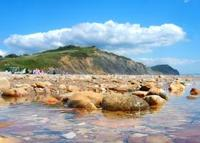
Charmouth Beach
Cliffs full of fossils at the portal to England's Jurassic Coast
You probably won't want to spread your beach blanket out on Charmouth Beach, but if you have a keen eye and good hiking shoes, you just might find a few dinosaur fossils.
Charmouth Beach lies in the middle of what is known as the Jurassic Coast, a 95-mile stretch of cliffs along the southern coast of England known for its ancient dinosaur fossils. Although it is called the Jurassic Coast, fossils from the area actually span the Triassic, Jurassic and Cretaceous periods, which rounds out to about 180 million years of history.
Interested visitors can also make their way to the Charmouth Heritage Coast Center, where major discoveries and the history of the village is documented. The Heritage Center works to encourage the safe and sustainable collection of fossils from the rocky beaches around the village.
Read more about Charmouth Beach on Atlas Obscura...
Category: Geological Oddities, Natural History, Incredible Ruins
Location: Charmouth, United Kingdom
Edited by: serflac, atimian
Mary Celeste Monument
Tue, 15 Nov 2011 12:00:00 -0600
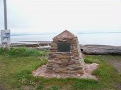
Mary Celeste Monument
Commemoration of a sea voyage gone mysteriously wrongIt makes little sense that Sir Arthur Conan Doyle stylized the sinking of the Mary Celeste. The story certainly doesn't need intrigue, or a bizarre cast of characters. In fact, the real story is so strange, that it could happen tomorrow and would still send a chill down the spine of everyone who heard about the discovery of the unmanned Canadian ship.
The Mary Celeste was built in 1861 in Spencer's Island, Nova Scotia. For the first five years of its existence, the 282-ton ship had nothing but bad luck. Eerily foreboding, through 1866 the ship went through three captains; two crashed the ship and one died of pneumonia within a week of the ship's first voyage. Those were mini-crises, but the real oddity occurred in 1872 when the ship was spotted 600 miles off the coast of Portugal.
Completely unmanned when it was discovered, two men boarded the ship that should have reached Italy by the time it was found in the middle of the Atlantic. What they found sent shivers. There was not a single man aboard, and one life boat was missing. However, the ship was completely seaworthy except for a few unexplained problems; the captain's logbook was missing, the clock and ship's compass were broken and it appeared that the ship was left in a hurry.
Immediately questions swirled around the mystery vessel. It wasn't attacked, and hadn't crashed, but had been abandoned. Some blamed seaquakes and tsunamis, while others suggested piracy, drunken mutiny or alcohol-induced explosion. Each story explained a part, but couldn't explain the whole mystery behind the rapid abandonment.
Today, the Mary Celeste is something of legend, and a commemorative memorial was dedicated to the crew in the place it was built on Spencer's Island. Along with the monument, a theater in the shape of the Mary Celeste was also erected near the monument to commemorate the fateful and mysterious voyage of 1872 that will never be perfectly explained.
Read more about Mary Celeste Monument on Atlas Obscura...
Category: Hoaxes and Pseudoscience, Incredible Ruins
Location:
Edited by: atimian, Dylan
Hotel Punta Grande
Tue, 15 Nov 2011 09:00:00 -0600
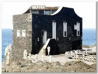
Hotel Punta Grande
The world's smallest hotel on the coast of the Canary IslandsIt looks like one big wave could pull the Hotel Punta Grande straight into the Atlantic Ocean. Precariously sitting on the coast of the Canary Islands, this 600 square meter lodging is the smallest hotel in the world in one of the most impressive locales.
With only four double rooms, and fairly sparse accommodations, you can bet you are not paying for luxury at Punta Grande. But location and novelty is the name of the game, and this miniature hotel takes the cake for both. Sitting on the volcanic island of El Hierro, the building was once a customs office, but is now a decaying hotel that only attracts a few visitors who take the time and have the adventurous spirit needed to reach the remote destination.
Much of the interior is furnished with recycled wood and other ship parts from wrecks that have washed ashore on the Canaries. Although there isn't cable TV or king-sized jacuzzis, the view of the ragged shore, formed by eruption is enough of a draw to make the Hotel Punta Grande worthwhile. While overall stoic, the hotel does feature a dining room, and a small, and relatively modern living room.
Read more about Hotel Punta Grande on Atlas Obscura...
Category: Commercial Curiosities, Odd Accommodations
Location: San Jeronimo, Spain
Edited by: serflac, atimian
Usko Ayar
Mon, 14 Nov 2011 19:00:00 -0600
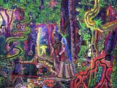
Usko Ayar
Art school in the Amazon: Drugs, nature and sustainable agricultureIn 1988, shaman and painter Pablo Amaringo opened the Usko Ayar art school. Translated in Quechua as Spiritual Prince, the roots of his work were in his religious experiences with ayahuasca, a powerful hallucinogen used by many healers in the Peruvian Amazon. But despite his own works' connection to the DMT-laden brew, his school was created to provide opportunity for hundreds of youths with no chance to develop their own artistic talent.
After being approached by an anthropologist named Luis Eduardo Luna, Amaringo began transforming his home into an art school. The men hoped to inspire their young students with the nature around them. Bringing in a class of a few dozen children who would otherwise have no opportunity in the often-poverty stricken rainforest regions of Peru, the Usko Ayar school opened.
With the support of donors and art sales, the school grew and incorporated other skills into the education. Besides teaching drawing and painting, the school also taught english and other basic subjects. Each painting that was sold was split between the student artist and the school, providing funding for the project while supplementing the income of families used to relying on slash and burn agriculture along the river.
The success of Usko Ayar has brought in other funding for schools in the Amazon, and the United Nations honored the project in 1992. Since that time, hundreds of promising artists have gotten their start in the school and returned their time and money to their community, working to promote sustainable agriculture and education in the region.
Although Amaringo died recently, the school is still in operation in its original studio and has served over 700 students ranging in age from 8-24. The school can be visited, and much of Amaringo and his students' art is on display and available for purchase.
Read more about Usko Ayar on Atlas Obscura...
Category: Outsider Art
Location: Urbanizacion Hunter, Peru
Edited by: serflac, atimian
Racławice Panorama
Mon, 14 Nov 2011 17:01:00 -0600
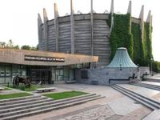
Racławice Panorama
19th century panorama lets you relive a Polish uprising via 120 year old Panorama paintingOver its history, Poland has been subject to Russian dominance multiple times. The first was an extended period of intervention and war during the 16th through 18th centuries. The second was a good chunk of the 20th century, when the Soviet Union engulfed a war-ravaged Poland. In the sprawling 360 degree Racławice Panorama visitors can see the interplay of the two periods, as well as a memorial to one of the most legendary uprisings in Polish history.
In 1894, 100 years after the Battle of Racławice, a Polish uprising against a Russian invasion, a gigantic cyclical panorama was painted and installed in Lwów to commemorate the battle. Spanning 375 feet around and 50 feet high, the cyclorama depicts a peasant army wielding scythes and fighting a sizable Russian front. Although the battle was lost, the painting commemorates a brave attempt by the Polish to fight off invaders, and is an important part of national legend.
By using special lighting inside the cyclorama, and very realistic shading techniques, visitors can nearly relive the famous battle as it swirls around them. Circling around the massive building, the painting works to capture the chaos and heroism that marked the peasant uprising and will not let any visitor escape without being dragged into the history.
After World War II, it was brought to Wrocław where it stands today. Unfortunately, the onset of communism in Poland closed down the panorama, as the Soviet government would not stand the promotion of uprising against Russia. Closed for for 40 years, in 1985 the panorama was finally reopened and is now a major attraction in the city.
Read more about Racławice Panorama on Atlas Obscura...
Category: Outsider Art
Location:
Edited by: serflac, atimian, Dylan
Tashiding Monastery
Mon, 14 Nov 2011 05:00:00 -0600
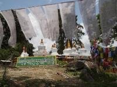
Tashiding Monastery
Miraculous vase predicts the future at this Tibetan Buddhist site in the HimalayasLegend has it that when guru Padmasambhava wanted to find a place to meditate in solitude, he shot an arrow into the sky and it landed on a site known today as the Tashiding Monastery.
Tashiding, which means "devoted central glory," represents the Nyingmapa order of Tibetan Buddhism and has been a center of worship in the Kingdom of Sikkim since the 1700s. At an elevation of almost 5,000 ft in the Himalayan mountains, it's not hard to see why. The monastery looks over a lush valley carved out by two winding rivers and offers breathtaking views of the dominating Mt. Kanchendzonga, one of the tallest mountains in the world after Everest. The land is marked with thousands of prayer flags that line every stairwell and walkway along with 41 stupas and hundreds of stone plates inscribed with Buddhist mantras. A particularly significant stupa displays the carving, "saviours by mere sight" - a phrase that indicates karmic cleansing for those that meditate at the monastery.
If relinquishing bad karma amongst prayer flags in the idyllic Himalayan mountain range isn't enough, Tashiding possesses one more object of interest: a magic vase. This auspicious vase is the subject of the Bhuchu festival. This festival draws Buddhists from all over the globe who come to witness the yearly ritual in which the sealed vase is opened and its contents inspected. Much like a divinely motivated Groundhog's Day, Nyingmapa Buddhists believe that prosperity for the following year can be predicted by the water level (i.e. when the vase is full, the year will be full of affluence and good fortune.) The festival takes place at midnight during the full moon in the first month of the Tibetan calendar, usually between February and March.
Read more about Tashiding Monastery on Atlas Obscura...
Category: Relics and Reliquaries, Rites and Rituals, Curious Places of Worship
Location: West District, India
Edited by: EmilyYaMei, atimian
Tarasque
Fri, 11 Nov 2011 11:11:00 -0600
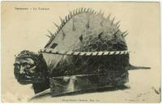
Tarasque
Sculpture of a legendary French dragonYou don't expect to see dragons in the South of France. Sun-tanned heirs to the shipping industry and the occasional fire-breathing celebrity on vacation mabye, but not dragons. The city of Tarascon is the exception to that rule, and is named after a grotesque dragon-like beast that's had a presence in the region for 2,000 years.
Before understanding the history of the town of Tarascon, it's important to get a mental picture of the beast itself. A Tarasque is a dragon with six stubby bear legs, the body of an ox, and the grumpy face of a powerful lion. With its short, fat body, It would almost be cute, until you realize the Tarasque also has a wildly-swinging scorpion tail and thorny turtle shell.
As legend would have it, the Tarasque migrated from Central Turkey and was almost impossible to kill. Knights and Kings chopped with every weapon they could find yet the beast eluded them. Some time around the the 1st century, St. Martha, one of the biblical figures that witnessed Jesus' resurrection, took care of the problem. She simply charmed the beast and brought it back to Tarascon. Unfortunately, the villagers still feared the monster and killed it, even though it made no attempt to attack or even defend itself.
After the beast was killed, the town's people felt guilty and named their town after the dragon they had slain. Today, a sculpture of the Tarasque sits placidly in the town near King René's Castle. Every year, the villagers of the town celebrate a festival in honor of the Tarasque and its untimely and eventually sad death.
Read more about Tarasque on Atlas Obscura...
Category:
Location: Tarascon, France
Edited by: serflac, atimian
Treehouse on top of Kilauea
Fri, 11 Nov 2011 09:00:00 -0600
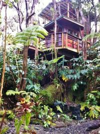
Treehouse on top of Kilauea
A true treehouse near Hawaii Volcanoes National ParkThe Kilauea Treehouse offers those clever enough to make a reservation in advance the chance to live out the childhood fantasy of sleeping in a treehouse. Not to mention this treehouse is high in the canopy of a tropical Hawaiian forest.
Built out of a recycled church, the treehouse is mid-canopy in the forest and the erupting Kilauea volcano is only two miles away. Luckily the trade winds carry the fumes and ash in the other direction so your stay won't be tainted with volcanic spewing. Besides the novelty of sleeping in a tropical treehouse, the site offers a perfect chance to see the volcano up close. You can even go after dark and see the glow of the molten lava while the volcano caldera boils at night like an enormous cauldron.
Read more about Treehouse on top of Kilauea on Atlas Obscura...
Category: Eccentric Homes
Location:
Edited by: hilohina, atimian
Hill of Witches
Thu, 10 Nov 2011 10:00:00 -0600
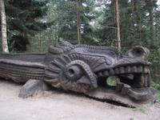
Hill of Witches
Lithuania's outdoor sculpture trail of wooden folk artJust off the main street in Juodkrante, Lithuania, the forest is alive with a vast array of fairy-tale creatures, crow-monsters, devils and saxophonists. Known as the Hill of Witches, this public trail through the woods takes visitors on a trip through the most well-known legends and stories in Lithuanian folk history.
Work began in 1979 on the sculpture park, and it now features 80 different wooden carvings from local artists. Painstakingly hand-crafted, each sculpture depicts a popular character from folk and pagan traditions in the Juodkrante. The public park got its name long before the sculptures were placed along the wooded trails, and is in fact a reference to the pagan celebrations that take place on the hill during the Midsummer's Eve Festival.
Each year on June 24th, people across Lithuania dance, sing and bring in the midsummer with the older folk traditions of the country. After Christianity came to Lithuania, the celebration was renamed Saint Jonas' Festival, but many of the practices still have pagan roots, as is echoed by the fantastic world of the Hill of Witches sculptures.
Read more about Hill of Witches on Atlas Obscura...
Category: Outsider Art, Rites and Rituals
Location: Juodkrante, Lithuania
Edited by: serflac, atimian
Carnac Stones
Thu, 10 Nov 2011 07:00:00 -0600
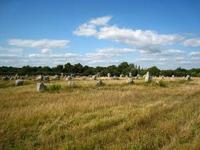
Carnac Stones
Hundreds of prehistoric stones, arranged in perfect lines in a French fieldWhen a gap in historical knowledge occurs, people tend to fill it in with whatever they want to believe. Since the modern age began, the people of the village of Carnac have tried to fill in the missing pieces of 4,000 prehistoric stones, perfectly lined up in a series of fields in Brittany.
The Carnac Stones date back between 4500 B.C.E-3300 B.C.E, and are mysteriously lined up in three open field sites. Stretching almost a mile in length, the fields feature equally spaced stones ranging in size from one meter to 13 feet high. Although studies and analysis has been performed on the neolithic structures, there is no definitive answer to their purpose or creation.
Frighteningly without understanding, the people of Carnac stepped in and wrote a narrative based on their own status in the world. Local lore believes that the stones were a Roman army that was turned to stone Merlin, the great wizard during the time of King Arthur. As with many local pagan traditions, this legend was adapted to fit a Christian lens as well, and some claim the stones are a fleeing army of Pagans turned to stone by Pope Cornelius.
Although we will never have the true answer that explains the bizarre lines of stones, following the narratives that explain them will likely be an interesting study for years to come, and will also likely change in the coming millennia as well.
Read more about Carnac Stones on Atlas Obscura...
Category: Unusual Monuments, Strange Statues, Curious Places of Worship
Location: Carnac, France
Edited by: serflac, atimian
Esteve Pharmacy
Thu, 10 Nov 2011 05:00:00 -0600
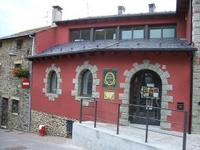
Esteve Pharmacy
Collection of albarellos in a 15th century pharmacyThe pharmacy of today is sterile, modest and efficient. Each bright orange medicine bottle is the same, and patients make their way in and out without lingering. However, 500 years ago, the local pharmacy was less science and more art, and the Esteve Pharmacy Museum in Llívia, Spain captures this ideal in the vibrant colors and luxury of a medieval European apothecary.
Established in the 15th century, the Esteve Pharmacy is one of the oldest in Europe. Since 1965 it has only housed the museum, but in its heyday, it attracted patients from across the region for medical treatment and drugs. Before the days of the child-locked pill container, remedies were kept in albarellos, a type of painted pottery that was sealed with parchment or leather.
Today, the museum has a large collection of the albarellos, including 87 rare blue albarellos that were modernized and include painted labels of the drugs they contained. Along with the beautiful storage jars, the museum also features a gaudy baroque cupboard that looks more fitting for a king's kitchen than a medieval clinic. The contrasts between the museum and modern pharmacies are striking, and the Esteve Pharmacy is a fascinating look into the artful world of medieval medicine.
Read more about Esteve Pharmacy on Atlas Obscura...
Category: Museums and Collections, Pharmacy Museums, Unique Collections
Location: Llivia, Spain
Edited by: atimian
The Republic of Molossia
Wed, 09 Nov 2011 07:00:00 -0600
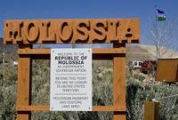
The Republic of Molossia
The smallest country in the worldWhat makes a territory a republic? Is it a currency, laws or a fearless leader in a snappy uniform? International recognition doesn't hurt anything either, but the first qualities seem a little more attainable for the average micro-nation, and Kevin Baugh and Molossia have all three.
Born in 1963, Baugh and a friend were only teenagers when they dreamed up the idea to create their own micro-nation, separate from the United States and governed by their authority. Through the early 1990s, the territory was known as the Grand Republic of Vuldstein, but in 1999, the new republic of Molossia was formed with Baugh at the helm as President.
With only an acre of territory in arid Nevada, the entire country is comprised of a small home known as the Government House, where Baugh lives with his family and dogs. Although the country has claimed other swaths of land, including 50,000 acres on Venus, the land in Nevada is where the government is centered.
Fully outside of the United States jurisdiction, Molossia does not pay taxes, and has its own currency that is printed on poker chips. Currency is valued against raw cookie dough, which is popular and used for commerce inside the nation. Baugh is the clear leader and has power to exercise all decisions in the country.
Although it must be pre-arranged, he gives tours wearing his Molossia uniform, complete with medals and a sash. A tour will cost outsiders their pocket change, and you must have a valid passport, that will be stamped, to enter the small republic. Aside from the occasional tour, Molossia has little to do with the America, claiming to be an independent entity surrounded by the larger USA. While some visitors are accepted, all citizens are in Baugh's family, and applications for citizenship are not accepted by the President.
Read more about The Republic of Molossia on Atlas Obscura...
Category: Micro-Nations
Location:
Edited by: atimian